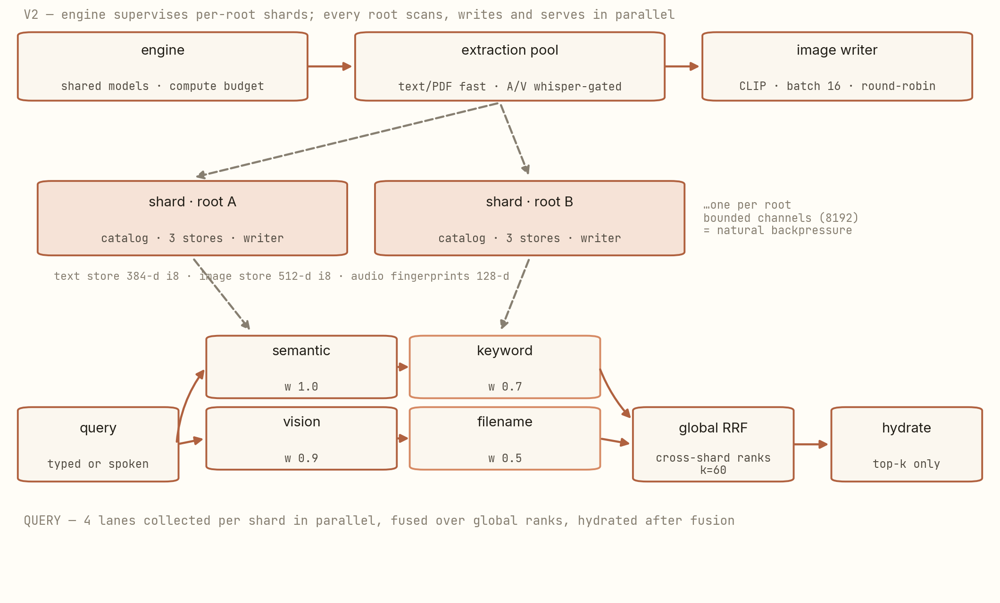
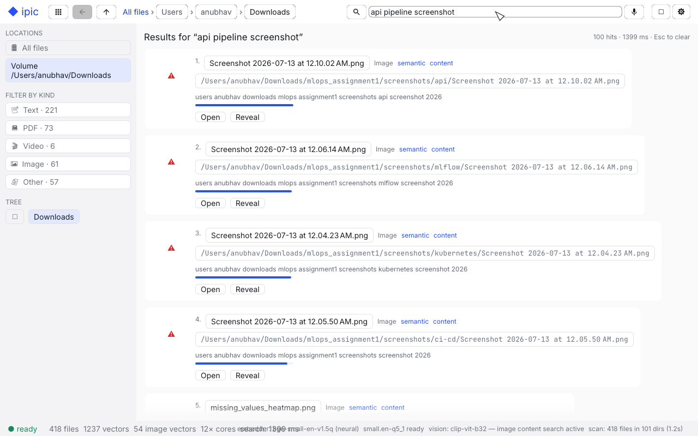

Scaling a vector index to 350,000 files: sharding, backpressure, and a CLIP vision lane.
v1 of ipic was a single pipeline with one catalog and three retrieval lanes, and it felt fast — until it met my actual home directory. This part is the v2 rewrite: per-root shards, bounded-channel backpressure, a CLIP vision lane that nearly starved to death, a compute budget, and the measured numbers that came out the other side.
Four things broke at 350k files, and the fix was architectural, not incremental: one catalog became one shard per root (each owning its SQLite database, three vector stores, and an embed-writer thread, fed by a bounded 8,192-deep channel — backpressure for free); filename-only images became a CLIP vision lane (ViT-B/32, both towers, batch-16 — after fixing a claiming order that starved it); self-sizing thread pools became an explicit compute budget; and "indexing…" became live rates and ETAs. Measured after the rewrite: ~2.5k files/s scan, ~30 ms end-to-end queries, i8 recall within 1% of f32.
What this post is about
This is the third and last part of the ipic build log (Part 1: the v1 engine; Part 2: the ranking math). Part 3 is about what happens when a design that feels right at thousands of files meets a few hundred thousand of them — the failures, the rewrite, and the measurements. If you've ever wondered what "we had to shard it" actually means in code, this is that story with the diff stats attached.
Prerequisites: Part 1's vocabulary (mmap, WAL, quantization) or general systems comfort. No Rust needed — every mechanism is described before it's used.
The moment it broke
v1's weaknesses were known and listed in Part 1 — one catalog for every root, images by filename only, self-sizing pools, no honest progress. At a few thousand files each was a footnote. Pointed at a 350,000-file home directory, they compounded:
- One SQLite database and one vector file meant every write from every root landed in the same lock domain, and one scan stream serialized discovery.
- The thread pools sized themselves. Walker, extraction workers, ONNX intra-op, whisper — each takes "the core count" by default; pointed at hours of work, they contended with each other and with the queries a file manager is supposed to answer instantly.
- An index that takes hours with a spinner is a trust problem. People kill processes like that.
The rewrite, in one commit
The v2 commit message is almost an outline: "per-root shards, CLIP vision lane, background
lifecycle, compute budget, live ETA." The diff: 30 files, +2,496 −942 — a
rewrite in the honest sense, with a new shard.rs (+171 lines) and
vision.rs (+89), and the search path reworked for cross-shard fusion.

1. Shards: one per root, no shared mutex
Each configured root gets a shard — a directory named by a readable segment plus an FNV-1a
path hash — holding its own catalog.db and its three vector
stores (text, image, audio fingerprints). Roots scan, write, and serve queries in parallel
with nothing shared but the models. The embed-writer thread per shard receives extracted
chunks through a bounded channel of 8,192 deliveries: when embedding lags
extraction, producers block instead of buffering unbounded chunk text in RAM —
backpressure as an architecture property, for the price of one integer.
2. The compute budget
v2 makes the thread partition explicit: a ComputeBudget splits cores between the
global rayon pool (sized for query scans), extraction workers, ONNX intra-op threads, and
whisper workers. The design question it answers: when a query arrives mid-index, who yields?
Now it's a configured decision, not a race. On my 12-core machine the defaults leave search
saturated and everything else sized to fit alongside.
3. The CLIP vision lane — and the bug that starved it
Images finally became first-class: every image is decoded and downsampled in parallel, then embedded by a CLIP ViT-B/32 vision tower (~150 MB with its text twin) into the same 512-d space as the query text — "sunset over water" finds photographs by content. The geometry that makes a shared text/image space work is the subject of an earlier post. HEIC/HEIF/AVIF decode through ffmpeg when present; SVGs fall back to filename context, honestly.
My favorite bug of the whole project lived here. The extraction workers claim jobs by database id — and text files own the low ids. A mixed claim query therefore handed out nothing but text while any text remained, and the single CLIP inference thread sat fed on scraps while hundreds of thousands of paragraphs queued ahead of every image. The fix is its own commit: "round-robin image claiming so CLIP never starves behind text" — the pool now alternates text/image claims globally. A scheduling bug wearing a machine-learning costume. (The speech lane runs whisper.cpp; the vision lane follows the original CLIP paper.)
4. Measured, not vibes
Two days of polish commits follow — one of them just +18 −15 lines across two files to "unblock bulk-index throughput at 350k-file scale," a reminder that bottlenecks at scale are usually scheduling, not algorithms. (The same commit message notes gigatoken was evaluated and rejected — no crates.io release, no WordPiece/BERT — which is the kind of decision record I wish more repos kept.) The measured state, from the repo's guide, on a 12-core Apple-Silicon laptop:
| Path | Measured | Conditions |
|---|---|---|
| Scan discovery | ~2.5k files/s | 350k-file home directory, 8 shards, all cores |
| Query, end to end | ~30 ms | models resident; query embedding dominates |
| Retrieval lanes | 4–10 ms | all four lanes, vector scan sub-ms |
| i8 vs f32 recall | within 1% @ rank 10 | 1M-chunk corpus, documented benchmark · why i8 barely hurts |
| Whisper transcription | ~35× realtime | small.en q5_1, beam-5, Accelerate BLAS, CPU |
| Vector record | 396 bytes | rowid u64 + scale f32 + 384 × i8 |

The quiet design decisions
Two v2 details deserve their own paragraph because they prevent whole classes of future pain. Model identity is part of storage: every vector store's header carries an FNV hash of its embedder's identity; open a store built by a different model and the engine wipes the derived data and re-queues the files — stale vectors from an old embedding space can never leak into new rankings. And the UI reads a cache, not the database: a 1 Hz progress reporter aggregates shard status into one snapshot the frame loop clones, so rendering never contends with indexing for SQLite readers.
Shipped since this post
Three things landed after the rewrite that close loops this post left open. Deletions
now give the disk back: freed slots used to tombstone and recycle silently — correct,
but the file never shrank and the reported vector count never dropped, so deleting files
looked like a no-op. Status now reports live vectors (allocated minus the recycled
pool), and once that pool passes 1,024 slots and 25% of the file, the store rewrites itself
contiguously and remaps every SQLite slot reference in one transaction. The regression test
deletes 1,200 of 1,600 files and asserts vectors.bin shrinks below half.
The 350k-file home directory became the default rather than an experiment —
fresh installs scan the whole home directory behind a widened skip list. And v0.1.1
shipped as a macOS DMG: a tagged push builds a -C target-cpu=apple-m1
release on an arm64 runner and attaches the ad-hoc-signed bundle to the GitHub release.
What's still honest to want
- The vector scan is brute force. Right answer to ~10⁶ chunks per store at these latencies; past that, IVF or HNSW slots in behind the same store interface — the seam is deliberate.
- Non-speech audio is still acoustics, not semantics. Music mood and ambience matching remains future work; the README says so instead of the marketing department.
- Whisper on GPU is still a trap for this workload — one serialized state — which is why the CPU state pool remains the default at 35× realtime per worker.
Reproduce
# macOS on Apple Silicon: grab the v0.1.1 DMG from Releases, or build from source:
git clone https://github.com/anubhavagr/ipic
cd ipic && cargo build --release
./target/release/ipic-cli scan # the whole home directory is the default scope now
./target/release/ipic-cli status
./target/release/ipic-cli search "sunset over water"That's the series. Part 1 built the engine, Part 2 derived the ranking, and this part paid for the scale. The through-line I'd keep for any system like this: make the constraints explicit, then make the measurements honest — the architecture tends to design itself once both are true.
← Part 1: the v1 engine ← Part 2: the ranking math Repo on GitHub →